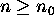
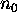
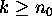

Induction
Mathematical Induction -- First Principle
Subjects to be Learned
- first principle of mathematical induction
- basis step
- induction hypothesis
- induction
Contents
As we have seen in recursion ,
the set of natural numbers can be defined recursively,
and its elements can be generated one by one starting with 0 by adding 1.
Thus the set of natural numbers can be described completely by specifying the basis
element (0), and the process of generating an element from a known element in the set.
Taking advantage of this, natural numbers can be proven to have certain properties
as follows:
First it is proven
that the basis element,
that is 0, has the property in question (basis step).
You prove that the seeds (the first generation elements) have the property.
Then it is proven that if an arbitrary natural
number, denote it by n, has the property in question, then the next element, that is
n + 1, has that property (inductive step).
Here you prove that the property is inherited from one generation (n)
to the next generation (n + 1).
When these two are proven, then it follows that all the natural
numbers have that property. For since 0 has the property by the basis step, the element next to it, which is
1, has the same property by the inductive step. Then since 1 has the property, the element next to it,
which is
2, has the same property again by the inductive step. Proceeding likewise, any natural number can be shown to have
the property. This process is somewhat analogous to the knocking over a row of dominos with knocking over the first domino
corresponding to
the basis step.
More generally mathematical statements involving a natural number n such as
1 + 2 + ... + n = n( n + 1 )/2
can be proven by mathematical induction by the same token.
To prove that a statement P(n) is true for all natural number  , where
 is a natural number,
we proceed
as follows:
Basis Step: Prove that P( ) is true.
Induction: Prove that for any integer  , if P(k) is true
(called induction hypothesis), then
P(k+1) is true.
The first principle of mathematical induction states that if the basis step
and the inductive step are proven, then P(n) is true for all natural number
.
As a first step for proof by induction, it is often a good idea to restate
P(k+1) in terms of P(k)
so that P(k), which is assumed to be true, can be used.
Example:
Prove that for any natural number n, 0 + 1 + ... + n = n( n + 1 )/2 .
Proof:
Basis Step:
If n = 0,
then LHS = 0, and RHS = 0 * (0 + 1) = 0 .
Hence LHS = RHS.
Induction: Assume that for an arbitrary natural number n,
0 + 1 + ... + n
= n( n + 1 )/2 . --------
Induction Hypothesis
To prove this for n+1, first try to express LHS for
n+1 in terms of LHS
for n, and somehow use the induction hypothesis.
Here let us try
LHS for n + 1 =
0 + 1 + ... + n + (n + 1) =
(0 + 1 + ... + n) + (n + 1) .
Using the induction hypothesis, the last expression can be rewritten as
n( n + 1 )/2 + (n + 1) .
Factoring (n + 1) out, we get
(n + 1)(n + 2) / 2 ,
which is equal to the RHS for n+1.
Thus LHS = RHS for n+1.
End of Proof.
More examples can be found
here.
Also an
example
is given on how induction might be used to derive a new result.
Test Your Understanding of Induction
Indicate which of the following statements are correct and which are not.
Click True or False , then Submit. There is one set of questions.
Next -- Example of Use of Induction
Back to Schedule
Back to Table of Contents